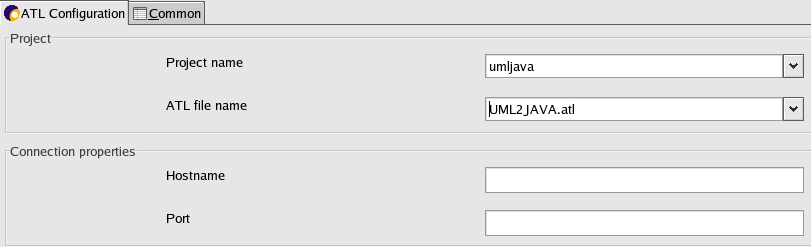

This time, the Launch Configurations dialog opens. A launch configuration allows you to configure how a program is launched, including its arguments, and other options. Select Remote ATL Transformation and click on New in order to create a remote ATL launch configuration.

This configuration is very simple. You just have to give the name of the project and the name of the ATL transformation.
Then, you should give connection properties : hostname (for example : localhost) and port.
Now, you can click on the button "Apply" and launch your transformation.